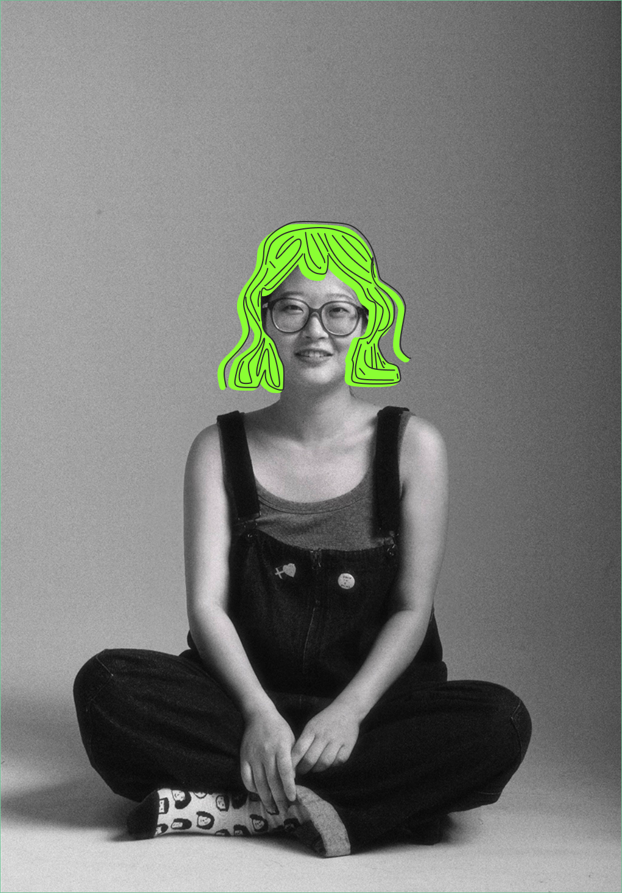

Hi! I'm Sixian.
- Fudan University, China BS, Psychology2019–2024
- University of Birmingham, UK Exchange Student, Psychology2022
- Indiana University Bloomington, US MS, Human-Computer Interaction2024–2026
I first met research methods as a psychology student, and I've been hooked ever since. They gave me a rigorous way to approach my curiosity about the world, the human mind, and culture. I spent most of undergrad following that curiosity wherever it led: does chewing help us manage stress? How can a misleading question plant a false memory? Why are religious elements so prevalent in pet funeral rituals? Along the way, I collected experiment data from 200 participants in three days, coded 40 videos one 5-second segment at a time, and ran sessions with older adults that lasted over two hours. Research can be tedious, but honestly, it's a lot of fun.
My senior thesis looked at how the design of digital products influences users' perceived decision-making autonomy, and that question led me to human-computer interaction. Two years of grad school taught me to see research more practically. Rigor still matters, but insights only make an impact when people wearing other hats can hear them and act on them. Working side by side with product and design is where the value of research finally felt tangible to me: it lowers the risk of strategic decisions and helps catch the wrong call before it gets made.
I'd love to grab a coffee and chat about my journey and the research stories I've collected over the years. And if you're in Austin, we could go kayaking, catch a sunset, or swing by the animal shelter to hang out with the cats.
